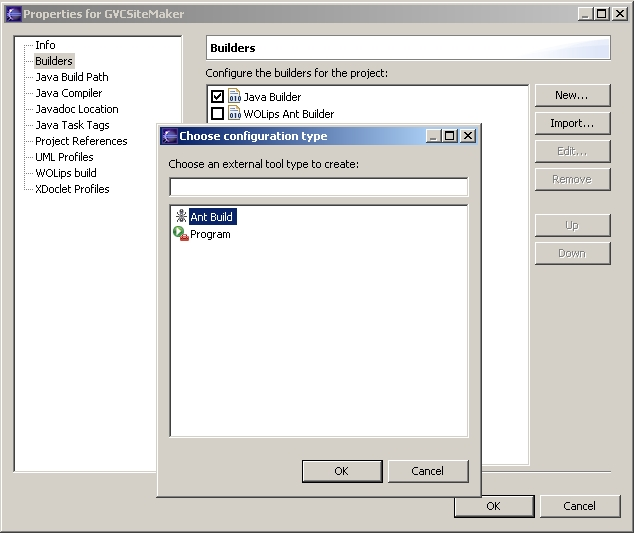
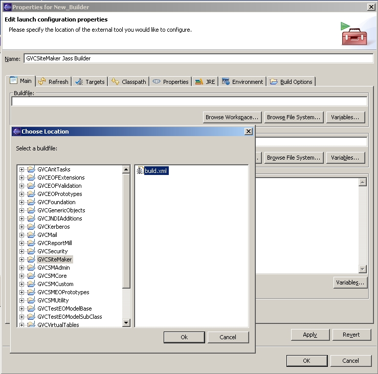
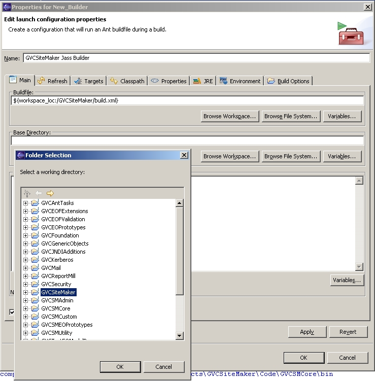
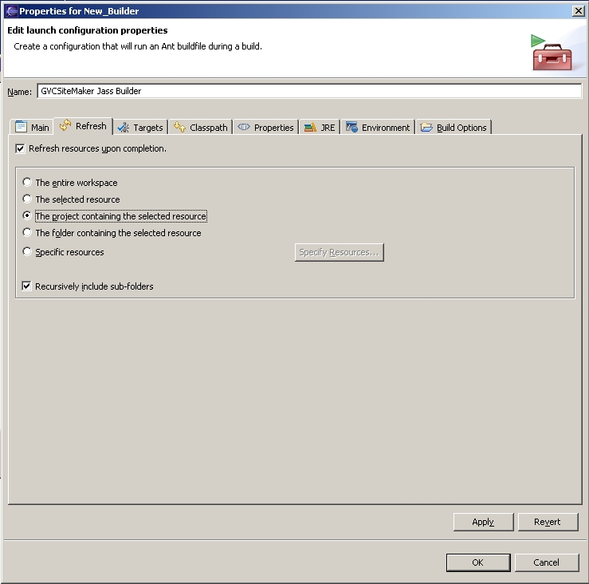
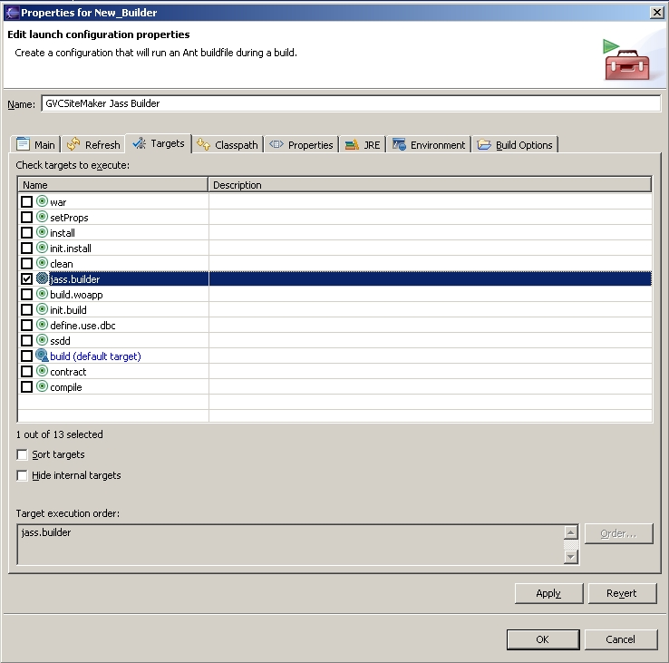
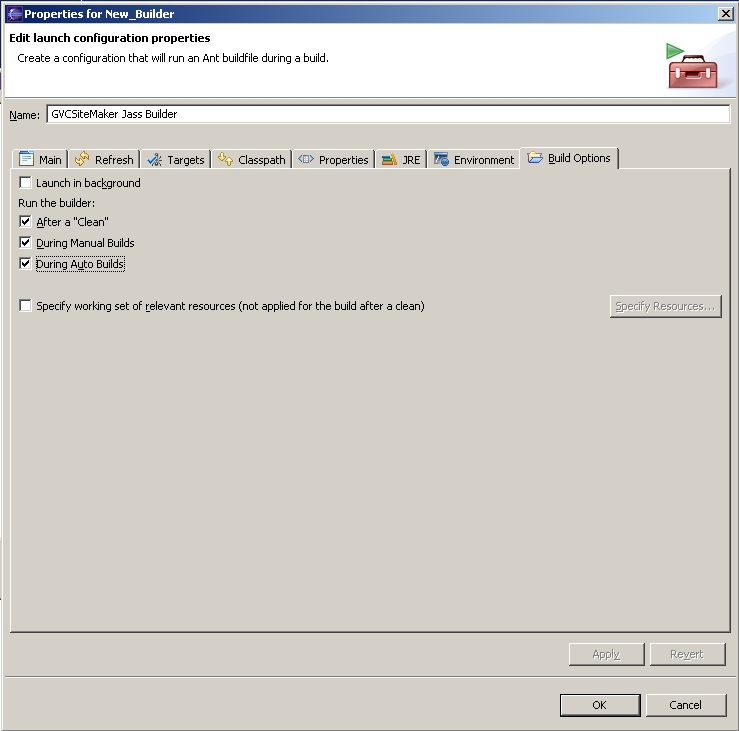

Configuring build.xml in a WOLips Project
Configuring build.xml in a Java Project
Using Jass With an Eclipse Project
This document describes how we use Ant and Jass when building WebObjects frameworks and applications. This should be generally applicable to all Java applications, though some aspects are doubtless particular to GVC. This document will look at something...
You need Ant. You can download it if you are not using Eclipse or otherwise have it installed.
If you are developing with WebObjects (and you should be!) either WOProject or WOLips needs to be installed. WOProject alone will suffice, but if you will be using Eclipse, WOLips will take care of both.
You will need one of two jar files which contain our Jass Ant task. One version is for use with WebObjects. This version allows the classpath to be set in terms of WebObjects frameworks. The other version is for standard Java development.
You might also want to use our build of Jass. Sometimes this has bug fixes which have not made it into the main release yet.
You will need to put one or two files in your home library directory:
On Win2K this is, C:\Documents and Settings\[user_id]\Library
On OS X this is, ~/Library
The first file, gvc.properties, defines Ant properties specific to our build process. You will need to edit some of the paths to match the configuration of your machine. You can rename this file, or put the properties in another file, but you will need to amend the build.xml file to reflect this.
The second file, woproject_tasks.properties, is only needed for WebObjects development, and defines Ant tasks supplied by WOProject. You don't need to edit this file.
If you are using WebObjects, the WOLips/WOProject install should have created the properties file wobuild.properties. If not, create that manually and edit the paths as needed.
Some changes are needed to the default build.xml file generated for a new project by WOLips. These changes are mostly mechanical replacements and additions. The build.xml files for applications and frameworks are slightly different. Here are a application example and a framework example.
Here are the steps to change a WOLips generated build.xml file to conform to the standard used at GVC:
<property file="${user.library.dir}/gvc.properties"/>
<!-- For uncontracted builds -->
<path id="uncontracted.class.path">
<pathelement location="src"/>
</path>
<!-- For contracted builds -->
<path id="contracted.class.path">
<pathelement location="ContractedSource"/>
</path>
<!-- GVC Tasks -->
<taskdef resource="taskdef.properties">
<classpath>
<pathelement path="${gvc.ant.tasks.path}"/>
<pathelement path="${woproject.path}"/>
<pathelement path="${log4j.path}"/>
</classpath>
</taskdef>
<!-- woproject Tasks -->
<taskdef file="${user.library.dir}/woproject_tasks.properties" classpath="${woproject.path}" />
<!-- GVC Standard jar files -->
<path id="gvc.standard.jars">
<pathelement location="${junit.path}"/>
<pathelement location="${jass.path}"/>
</path>
<!-- Additional, project specific jar files -->
<path id="additional.jars">
<!-- Add any additional jars here -->
<!-- <pathelement location="ognl-2.3.2.jar"/> -->
</path>
<!-- Create directories for generated files if they don't already exist -->
<mkdir dir="bin"/>
<mkdir dir="ContractedSource"/>
ant clean
ant install
ant build -Duse.dbc=true
<!-- Target for Jass contracted builds from within Eclipse -->
<target name="jass.builder" depends="define.use.dbc, full.build" />
<target name="define.use.dbc">
<property name="use.dbc" value="true"/>
</target>
<!-- Target for command line builds, also used by Jass contracted builds from within Eclipse -->
<target name="full.build" depends="setProps, contract, compile, build, copy.install" />
<!-- Target used by jass.builder and full.build to copy the built product to the installed location.
This is done as the classpaths generated for the jass and wocompile tasks expect to find
the frameworks in the installed location. -->
<target name="copy.install" depends="setProps" if="framework.name">
<copy todir="${install.dir}">
<fileset dir="." includes="${framework.name}.framework/**"/>
</copy>
</target>
<!-- Jass Design By Contract Generation -->
<target name="contract" depends="setProps" if="use.dbc">
<property name="project.source.path" value="contracted.class.path"/>
<jass contract="pre,post,inv,loop,check,forall"
isDebugging="${jass.debug}"
destination="ContractedSource">
<source dir="src">
<depend targetdir="ContractedSource"/>
<include name="**/*.java"/>
</source>
<frameworks root="${wo.wosystemroot}">
<patternset>
<includesfile name="woproject/ant.frameworks.wo.wosystemroot"/>
</patternset>
</frameworks>
<frameworks root="${wo.wolocalroot}">
<patternset>
<includesfile name="woproject/ant.frameworks.wo.wolocalroot"/>
</patternset>
</frameworks>
<classpath refid="gvc.standard.jars" />
<classpath refid="additional.jars" />
<!-- Need this so that Jass sees the classes in GeneratedEOs -->
<classpath refid="uncontracted.class.path"/>
</jass>
</target>
<!-- Distribution WOProject compilation -->
<target name="compile" depends="setProps">
<!-- This will get overriden if the contract task is run -->
<property name="project.source.path" value="uncontracted.class.path"/>
<wocompile destdir="bin"
debug="${wocompile.debug.flag}"
optimize="${wocompile.optimize.flag}"
deprecation="on">
<src refid="${project.source.path}"/>
<frameworks root="${wo.wosystemroot}">
<patternset>
<includesfile name="woproject/ant.frameworks.wo.wosystemroot"/>
</patternset>
</frameworks>
</frameworks>
<frameworks root="${wo.wolocalroot}">
<patternset>
<includesfile name="woproject/ant.frameworks.wo.wolocalroot"/>
</patternset>
</frameworks>
<classpath refid="gvc.standard.jars" />
<classpath refid="additional.jars" />
</wocompile>
</target>
Some changes are needed to the default build.xml file, but those exact changes will depend on what you are using already. What follows below is a general guide on what needs to be done.
<property file="${user.library.dir}/gvc.properties"/>
<!-- For uncontracted builds -->
<path id="uncontracted.class.path">
<pathelement location="src"/>
</path>
<!-- For contracted builds -->
<path id="contracted.class.path">
<pathelement location="ContractedSource"/>
</path>
<!-- GVC Tasks -->
<taskdef resource="taskdef.properties">
<classpath>
<pathelement path="${gvc.ant.tasks.path}"/>
<pathelement path="${log4j.path}"/>
</classpath>
</taskdef>
<!-- GVC Standard jar files -->
<path id="gvc.standard.jars">
<pathelement location="${junit.path}"/>
<pathelement location="${jass.path}"/>
</path>
<!-- Additional, project specific jar files -->
<path id="additional.jars">
<!-- Add any additional jars here -->
<!-- <pathelement location="ognl-2.3.2.jar"/> -->
</path>
<!-- Create directories for generated files if they don't already exist -->
<mkdir dir="bin"/>
<mkdir dir="ContractedSource"/>
<!-- Target for Jass contracted builds from within Eclipse -->
<target name="jass.builder" depends="define.use.dbc, full.build" />
<target name="define.use.dbc">
<property name="use.dbc" value="true"/>
</target>
<!-- Jass Design By Contract Generation -->
<target name="contract" depends="setProps" if="use.dbc">
<property name="project.source.path" value="contracted.class.path"/>
<jass contract="pre,post,inv,loop,check,forall"
isDebugging="${jass.debug}"
destination="ContractedSource">
<source dir="src">
<depend targetdir="ContractedSource"/>
<include name="**/*.java"/>
</source>
<!-- DEFINE YOUR CLASSPATH HERE! -->
<classpath refid="gvc.standard.jars" />
<classpath refid="additional.jars" />
<!-- Need this so that Jass sees the classes in GeneratedEOs -->
<classpath refid="uncontracted.class.path"/>
</jass>
</target>
jass-rt.jar needs to be on the
class path. We do this by defining a special class path variable, JASS.
The easiest thing to point it to is the jass-rt.jar:Leave the Java Builder checked. This builder is not required, but helps to provide better error feedback in Eclipse for things like method references that become invalid when a method is renamed (instead of refactoring). After unchecking the WOLips Ant Builder, click New... and select Ant Build:
Give it a Name like ProjectName Jass Builder. This name needs to be unique in the workspace.
You can't just name it Jass Builder.
Next to Buildfile, click Browse Workspace... and select the build.xml file from the project:
Next to Base Directory, click Browse Workspace... and select the project:
Go to the Refresh tab, click Refresh resources upon completion and check off The project containing the selected resource:
Go to the Targets tab, uncheck build (default target) and check off jass.builder:
Go to the Build Options tab, and check off During Auto Builds:
